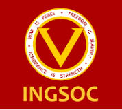
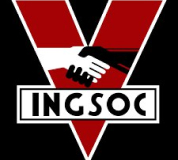

Ниже бился на ветру другой плакат, с оторванным углом, то открывая, то закрывая единственное слово:
Ниже бился на ветру другой плакат, с оторванным углом, то открывая, то закрывая единственное слово:
За спиной Уинстона голос из монитора все еще что-то бубнил про чугун и перевыполнение Девятого Трехлетнего Плана. Монитор был одновременно приемником и передатчиком, который улавливал любой звук, кроме очень тихого шепота. Более того, пока Уинстон оставался в поле зрения монитора, его можно было не только слышать, но и видеть. Конечно, никогда нельзя знать наверняка, наблюдают за тобой сейчас или нет.